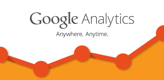

Below are some the images of the interesting Dashboards designed using Google Analytics Tool.
Here are few related analytics
A video about Google Analytics
Google Analytics is used to track website activity such as session duration, pages per session, bounce rate etc. of individuals using the site, along with the information on the source of the traffic.
It can be integrated with Google Ads,[8] with which users can create and review online campaigns by tracking landing page quality and conversions (goals).
Goals might include sales, lead generation, viewing a specific page, or downloading a particular file. Google Analytics' approach is to show high-level, dashboard-type data for the casual user, and more in-depth data further into the report set.
Google Analytics analysis can identify poorly performing pages with techniques such as funnel visualization, where visitors came from (referrers), how long they stayed on the website and their geographical position.
It also provides more advanced features, including custom visitor segmentation.[9] Google Analytics e-commerce reporting can track sales activity and performance. The e-commerce reports show a site's transactions, revenue, and many other commerce-related metrics.
On September 29, 2011, Google Analytics launched Real-Time analytics, enabling a user to have insights about visitors currently on the site.[11] A user can have 100 site profiles.
Each profile generally corresponds to one website. It is limited to sites that have a traffic of fewer than 5 million page views per month (roughly 2 pageviews per second) unless the site is linked to a Google Ads campaign.
Google Analytics includes Google Website Optimizer, rebranded as Google Analytics Content Experiments.[13][14] Google Analytics' Cohort analysis helps in understanding the behavior of component groups of users apart from your user population.
It is beneficial to marketers and analysts for the successful implementation of a marketing strategy.
Google acquired Urchin Software Corp. in April 2005.[2] Google's service was developed from Urchin on Demand.
The system also brings ideas from Adaptive Path, whose product, Measure Map, was acquired and used in the redesign of Google Analytics in 2006.
Google continued to sell the standalone, installable Urchin WebAnalytics Software through a network of value-added resellers until discontinuation on March 28, 2012.
The Google-branded version was rolled out in November 2005 to anyone who wished to sign up. However, due to extremely high demand for the service, new sign-ups were suspended a week later.
As capacity was added to the system, Google began using a lottery-type invitation-code model.
Before August 2006, Google was sending out batches of invitation codes as server availability permitted; since mid-August 2006 the service has been fully available to all users – whether they use Google for advertising or not.
More information about Google Analytics